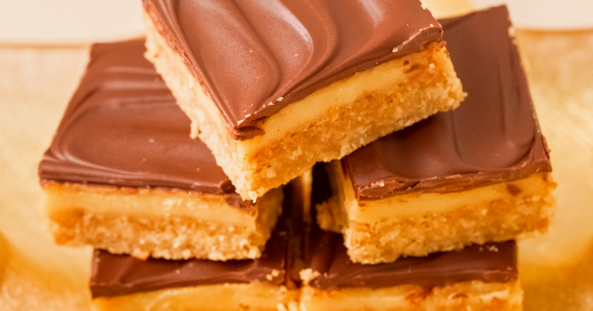

hamburger de siri
2 pães de hamburger
1 folha de alface
3 fatia de tomate
fatias de picles
1 queijo cheedar
hamburger artesanal de siri
não esqueça a maionese!
torta de manteiga escocesa
triture 2 pacotes de bolacha maria
misture com a manteiga derretida
coloque no forno por 30 min em 180 graus
não esqueça de moldar em uma forma
coloque 3 xicaras de açucar
leve o açucar ao fogo e deixe caramelizar
e em seguinte vem com a caixinha de leite condensado e mexa ate formar um brigadeiro
depois que tiver tirado a forma coloque o brigadeiro de caramelo e em seguida
vem derretendo o chocolate em banho maria e coloque por cima do brigadeiro
depois adicone na geladeira e deixe um dia ao outro
agora e so cortar e se deliciar!
